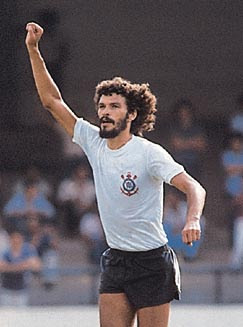
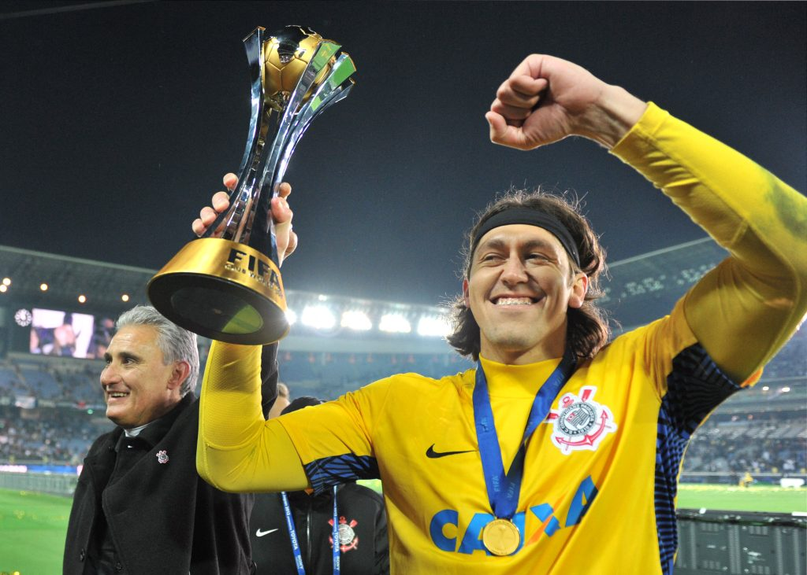

Muito importante na historia mais recente no clube onde foi um pilar da restruturação do clube
Quando veio foi um reforço midiático e tbm trazendo conquistas para o clube ÍDOLO.

Jogador incontestável e figura muito importante na construção da história do clube
Foi um dos líderes da democracia corinthiana movimento contra a ditadura militar
Um dos maiores ídolos do corinthians
Em sua passagem se tornou o quinto maior artilhiero na história do clube.
Cconsiderado por muitos o maior ídolo do clube
Conquistou os maiores títulos possíveis entre eles: Libertadores, mundial de clubes, Brasileirão, paulista.
